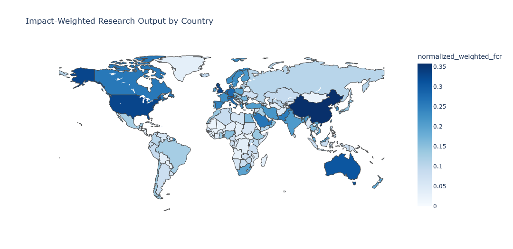
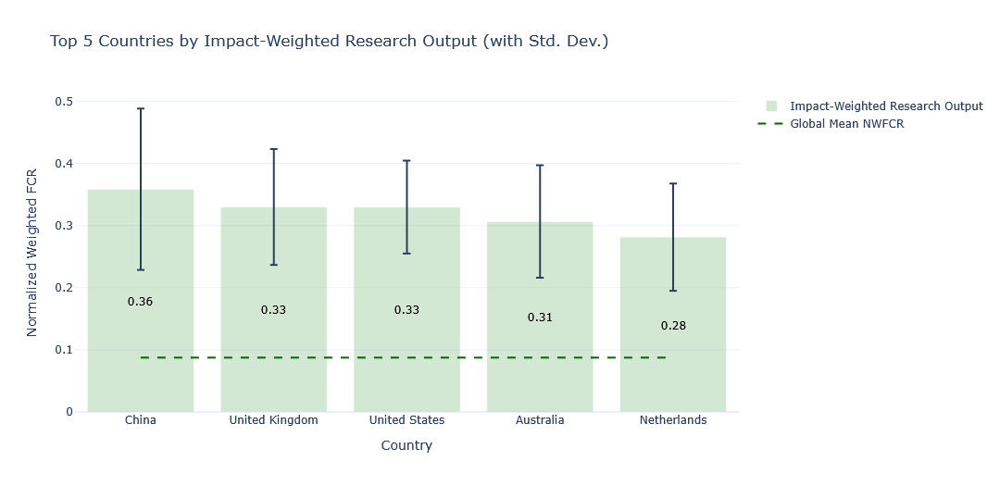
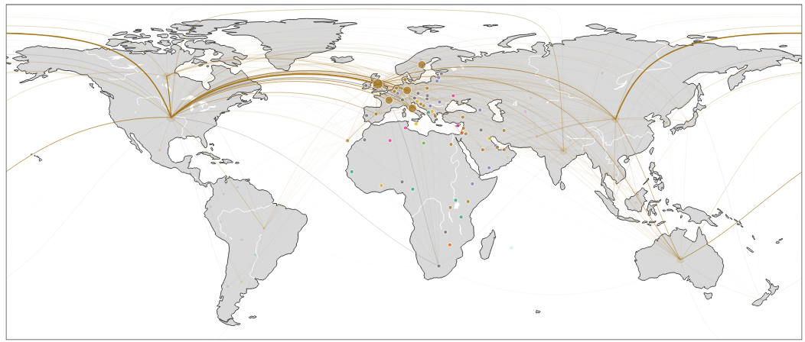
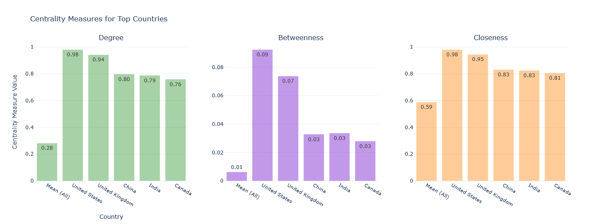

Mapping the Global COVID-19 Research Landscape
Bibliometric analysis of publication impact, collaboration networks, and field contributions using Google BigQuery
Overview
This project analyzes the global COVID-19 research landscape to support strategic funding and partnership decisions. Using publication metadata from the Dimensions COVID-19 dataset via Google BigQuery, I developed a novel Impact-Weighted Research Output metric that balances field-normalized citation impact with publication volume, then applied it to benchmark country-level performance, map international collaboration networks, and compare research contributions across disciplines. The US, UK, China, Australia, and the Netherlands consistently ranked highest, with the US surpassing global benchmarks across most fields; Math and Physical Sciences and Philosophy and Religious Studies showed the highest field-level impact despite lower publication volume than Biomedical and Clinical Sciences.
Project Context
This analysis was developed as a research landscape work sample. It demonstrates end-to-end data science workflow with research design (metric development), big data handling (Google BigQuery), SQL ETL workflow, and Python analytical skills for geospatial analysis and multi-format data visualization.
Research Questions
- Which countries produce the highest-impact COVID-19 research when both citation quality and publication volume are accounted for?
- Which countries serve as central hubs in the international COVID-19 research collaboration network?
- How does research impact vary across disciplines, and where are the gaps between volume and influence?
Study Design
Data Source: Dimensions COVID-19 publications dataset, accessed via Google BigQuery. Metadata includes author affiliations, field classifications, Field Citation Ratio (FCR), and publication counts.
Scope: Publications with non-null FCR values; single-author and single-country publications excluded from network analysis; top 1% of publications per field retained for collaboration network construction; countries with fewer than 10 publications filtered from country benchmarking to address small-sample outliers.
Analytical Approach:
- Metric Development — iterative construction and validation of a composite impact metric against three alternatives
- Country Benchmarking — global and country-level aggregation of the impact metric, choropleth mapping, top-5 comparison
- Network Analysis — co-authorship network construction, degree/betweenness/closeness centrality, top-10 hub identification
- Field Analysis — bubble chart visualization of average FCR vs. publication count by research field, US vs. global comparison
What I Found
Impact-Weighted Research Output
The custom metric — normalized, field-corrected, volume-weighted FCR — outperformed three alternatives on all distributional properties (Table 1). The key contrast:
| Metric | Mean | Std Dev | Max | Variance |
|---|---|---|---|---|
| Citation Rate | 11.98 | 6.83 | 68.50 | 46.66 |
| Average FCR | 4.63 | 1.21 | 6.33 | 1.47 |
| Research Efficiency | 0.92 | 4.37 | 190.20 | 19.08 |
| Impact-Weighted Research Output | 0.007 | 0.010 | 1.00 | 0.0001 |
The impact-weighted metric operates across n=68,166 field-country observations, compared to 235 for Citation Rate and just 23 for Average FCR, reflecting its greater granularity. Its variance (0.0001) is roughly 470,000× lower than Citation Rate variance (46.66), making it far more stable for cross-country comparison.
After applying the minimum publication threshold of 10 to remove small-country outliers (e.g., Nauru, with 3 publications but an inflated metric of 0.31), the top five countries were China (0.36), UK (0.33), US (0.33), Australia (0.31), and Netherlands (0.28). The US leads in raw publication volume (327,428 publications) — more than twice China’s output (155,934) — but China edges it on the composite metric, reflecting a higher average FCR (7.27 vs. 6.37).


Interpretation: The metric surfaces a distinction that raw counts obscure: the US publishes more, but China and the UK generate comparable or higher field-normalized impact per unit of output.
Collaboration Networks
The US and UK dominate all three centrality measures by a wide margin. The US degree centrality (0.98) and closeness centrality (0.98) are nearly at the theoretical maximum of 1.0, compared to a network mean of 0.28 and 0.59 respectively. The UK is close behind (degree: 0.94, closeness: 0.95). China, India, and Canada cluster in a second tier (degree: 0.76–0.80), well above the mean but clearly separated from the US/UK.
| Country | Degree | Betweenness | Closeness |
|---|---|---|---|
| Network Mean | 0.28 | 0.006 | 0.59 |
| United States | 0.98 | 0.092 | 0.98 |
| United Kingdom | 0.94 | 0.074 | 0.95 |
| China | 0.80 | 0.033 | 0.83 |
| India | 0.79 | 0.034 | 0.83 |
| Canada | 0.76 | 0.028 | 0.81 |


Interpretation: The US and UK are not just prolific — they are structurally irreplaceable in the global network. Their betweenness centrality (0.09 and 0.07 respectively, vs. a mean of 0.006) means they broker connections across otherwise disconnected research communities. For a funder, these are high-leverage partnership nodes.
Research Impact by Field
No field achieved both high publication volume and high impact simultaneously. The highest-FCR fields globally were Math and Physical Sciences (FCR: 5.74, n=10,585 publications), Philosophy and Religious Studies (FCR: 5.38, n=20,050), and Economics (FCR: 5.18, n=34,184). Biomedical and Clinical Sciences had by far the largest volume (470,377 publications) but a mid-range FCR (4.78).
The US consistently matched or exceeded global benchmarks across fields; it drove the impact in both Math and Physical Sciences and Philosophy and Religious Studies, and its Biomedical output — while outnumbered globally — had comparatively higher FCR.
Interpretation: The high Math and Physical Sciences FCR reflects computational epidemiology and modeling work that became rapidly and widely cited. The Social Sciences / Biology gap — high relevance, lower citation return — signals an under-invested area where targeted funding could shift the impact distribution.
Methods
Sample: Global COVID-19 publication dataset via Dimensions / Google BigQuery. Publication metadata extracted using SQL; data wrangled and analyzed in Python (Jupyter Notebooks); visualizations and tables rendered in R (Quarto).
Metric construction:
- Field-level FCR normalization: each FCR value divided by the mean FCR of its research field to remove cross-field citation practice bias
- Log-transformation of publication count:
log1p()applied to reduce skew from large-country outliers - Weighted FCR: normalized FCR × log-transformed publication count
- Final normalization: weighted FCR divided by its maximum value, producing a 0–1 scale
Network analysis: Co-authorship edges constructed from multi-country publications; top 1% within-field publications retained; degree, betweenness, and closeness centrality calculated using igraph (R)
Visualization: Choropleth maps via plotly (R); bar charts and bubble charts via ggplot2 + plotly; network maps as static output
R packages: dplyr, gt, ggplot2, plotly, igraph, viridis, gridExtra, cowplot
Key Insights
A Custom Metric Can Outperform Standard Bibliometrics
Simple citation counts and average FCR both fail in large-scale cross-country comparisons — the former ignores field norms, the latter is skewed by outliers. The iterative process of testing, diagnosing, and refining four candidate metrics before selecting one demonstrates the importance of metric validation, not just metric selection.
- The final metric’s low variance makes it stable across countries with very different publication volumes
- Logarithmic transformation was essential for handling the order-of-magnitude difference between prolific and small-output countries
- Field-level normalization ensured that high-citation fields (e.g., biomedical) did not automatically dominate
Network Position Matters as Much as Output Volume
Countries like India and Canada have substantial publication counts but lower centrality scores than the US and UK. The distinction matters for funding strategy: central network nodes are not just productive, they are connectors.
- High betweenness centrality indicates bridge roles between otherwise disconnected research communities
- Eigenvector centrality reflects integration into high-influence research clusters, not just raw connectivity
- Collaboration networks are a distinct dimension of research strength from output volume alone
Field-Level Gaps Signal Investment Opportunities
The bubble chart analysis revealed that high-volume fields are not always high-impact fields, and vice versa.
- Math and Physical Sciences and Philosophy and Religious Studies: unexpectedly high FCR, likely driven by computational epidemiology and ethics/policy work that attracted outsized citation attention
- Social Sciences and Biology: positioned below the impact-volume diagonal despite their foundational role in pandemic response
- Targeted co-funding in underperforming but high-relevance fields could yield disproportionate returns
Significance
This project demonstrates that:
- Publication data alone, properly structured and field-normalized, can generate actionable intelligence for research funders
- Network analysis and bibliometrics together provide complementary views of research influence that neither approach captures alone
- A reproducible, scalable pipeline built in BigQuery + Python + R can process large international datasets and deliver policy-relevant outputs
These findings contribute to understanding:
- Science of science and bibliometrics methodology
- Strategic research funding and international partnership development
- COVID-19 research landscape and pandemic preparedness investment
- Data pipeline design for large-scale public research datasets
Data & Code
Repository: github.com/kchoover14/Bibliometrics-COVID19-Research
Available:
- GBQ scripts
- Processed CSV tables (exported from GBQ)
- Figures (exported from GBQ/Python)
- Rendered HTML output
Reproducible workflow:
bubble_chart_data_create.ipynb— BigQuery SQL extraction and Python preprocessing; outputs CSVs for downstream analysisFinal analysis.ipynb— metric construction, validation, and network statistics in Pythonstimulating_cv19.qmd— R-based visualization, table rendering, and final HTML output
Tools & Technologies
- Python for data extraction, metric construction, and network statistics
- SQL / Google BigQuery for large-scale data access and initial aggregation
- R for visualization and report rendering
- Packages:
dplyr,gt,ggplot2,plotly,igraph,viridis,cowplot,gridExtra - Models / Methods: Field Citation Ratio normalization, log-transformation, network centrality (degree, betweenness, closeness, eigenvector)
- Visualization: Interactive choropleth maps (Plotly), bubble charts, bar charts with error bars, static network graphs
Publication Status
Manuscript: Not submitted — developed as an applied analytical work sample